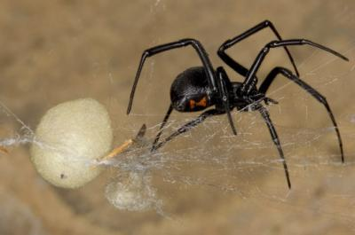

Tortuga
Una tortuga puede parecer inofensiva, pero: ¿sabía usted que pueden transmitir la salmonella? A los niños pequeños les encanta tenerlas como mascotas, sin embargo no lo recomendamos, pues ellos suelen llevarse todo a la boca y este sería un medio muy viable para contraer la enfermedad.
Alacranes
A algunas personas les gusta llevarlos en su pelo, pero cuidado con los aguijones, tienen un poderoso veneno. No se lo recomendamos.
cocodrilos
Muchos opinan que los cocodrilos y caimanes parecen lindas lagartijas. Si realmente quiere uno en su casa, antes pida la opinión de un habitante de la Florida. A menudo los encuentran en su piscina o coche y, tremendo susto.
Grandes felinos
Cuando son bebés, ¿quién podría resistirse? Pero no importa lo pequeño que sea o qué tan bien entrenados que estén, pueden volverse contra ti en un segundo. Su alimentación es carne cruda, ¿acaso no es esa una señal?
Viuda Negra

La Araña Viuda Negra tiene una reputación de ser una de las arañas más peligrosas del mundo. Esto es porque tienen glándulas de veneno muy grandes. Cuando muerden, es una hembra la mayoría de las veces. Los machos casi nunca muerden a los humanos, pero se ha sabido que ocurre de vez en cuando.
Kinkajou

Realmente no sabía lo que eran, pero cuando los vi los encontré adorables con sus pequeños cuerpos peludos y sus grandes ojos saltones. También conocidos como oso de azúcar, parecen un cruce entre ardilla y hámster. Serán muy lindos, pero también muy malos. Paris Hilton tiene uno como mascota llamado Baby Luv y en dos ocasiones la ha llevado a la sala de emergencias. Por esa razón, ocupa el primer lugar de nuestra lista de animales exóticos como mascotas.